第12章
球体的吸引力
命题70 定理30
如果指向球面每一点的相等的向心力随到这些点的距离的平方减小，则该球面内的小球将不会受到这些向心力的吸引。
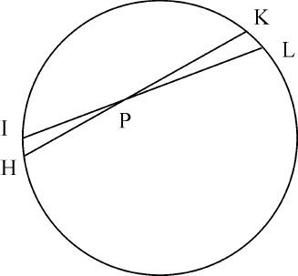
令HIKL为球面，P是球面内的小球。通过P向球面作条直线HK，IL，截取极短弧长HI，KL；因为（由引理7推论Ⅲ）三角形HPI，LPK相似，这些弧正比于距离HP，LP；落在由通过P的直线在球面上所限定的弧HI和KL之内的那些粒子，正比于这些距离的平方。所以这些粒子作用于物体P上的力相互间相等。因为力正比于粒子，反比于距离的平方。这两个比值复合成相等的比值1:1。所以吸引相等，但作用于相反方向上，相互抵消。由类似理由，整个球面产生的吸引由于反向吸引而全部抵消。所以物体P完全不受这些吸引力的作用。
证毕。
命题71 定理31
在相同条件下，球面外小球受到的指向球面中心的吸引力反比于它到该中心距离的平方。
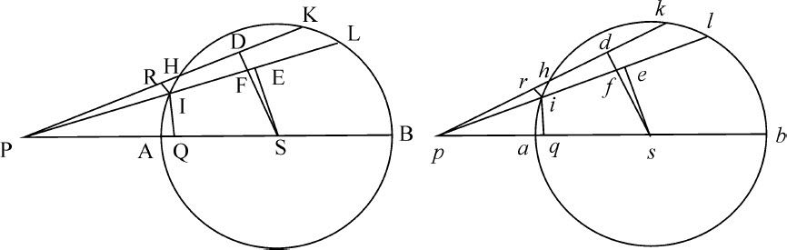
令AHKB，ahkb 为关于中心S。s 的两个相等的球面，它们的直径为AB，ab；令P和p 为二球面外直径延长线上的小球。由小球作直线PHK，PIL，phk ，pil ，在大圆AHB，ahb 上截取相等弧长HK，hk ，IL，il ；并作这些直线的垂线SD，sd ，SE，se ，IR，ir ；其中SD，sd 与PL，pl 交于F和f。再在直径上作垂线IQ，iq 。现在令角DPE，dpe 消失；因为DS与ds ，ES与es 相等，故可以取直线PE，PF与pe ，pf ，以及短线段DF，df 相等；因为当角DPE，dpe 共同消失时，它们的比值是相等的比值。由此可得：
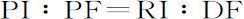
以及
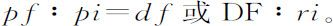
将对应项相乘，
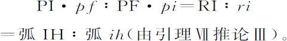
又，
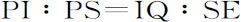
以及
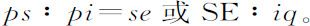
因而，
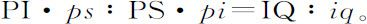
将其对应项与前面相似的比例式相乘：
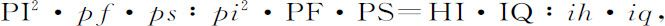
即，等于当半圆AKB关于其直径AB旋转时弧IH所掠过的环面，比当半圆akb 关于其直径ab 旋转时弧ih 所掠过的环面。而由假设条件知，使这些环面沿指向它们的方向吸引小球P和p 的力正比于环面自身，反比于环面到小球的距离的平方；即等于pf·ps 比PF·PS。又，这些力与其沿直线PS，ps 指向球心的斜向部分（由像定律推论Ⅱ中那样力的分角得到）的比，等于PI比PQ，以及pi 比pq ；即（由于三角形PIQ与PSF，以及pi g与psf 相似）等于PS比PF以及ps 比pf 。所以，吸引小球P指向S的吸引力比吸引小球p 指向s 的力，等于
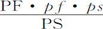
比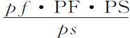
，即等于ps 2 比PS2 。而且，由类似理由，弧KL，kl 旋转生成的环面吸引小球的力的比也等于ps 2 比PS2 。在球面上，只要取sd 等于SD，se 等于SE，则所分割的环面对小球的吸引力的比总是有相同的比值。所以，把它们再组合起来，整个球面作用于小球的力的比也有相同比值。证毕。
命题72 定理32
如果指向球上若干点的相等的向心力随其到这些点的距离的平方而减小，而且球的密度以及球直径与小球到球中心的比值为给定值，则使小球被吸引的力正比于球半径。
因为，设想两个小球分别受到两个球的吸引，一个吸引一个，另一个吸引另一个，且它们到球心的距离分别正比于球的直径；则球可以分解为与小球所在位置相对应的相似粒子。则一个小球对球各相似粒子的吸引比其他小球对其他球同样多的相似粒子的吸引，等于正比于各部分间的比值与反比于距离平方的比值的复合比。而各粒子正比于球，即正比于直径的立方，而距离正比于直径；所以第一个比值正比于后一个比值的二次反比，变成直径与直径的比值。
证毕。
推论Ⅰ．如果多个小球绕由同等吸引的物质组成的球做圆周运动，且到球中心的距离正比于它们的直径，则环绕周期相等。
推论Ⅱ．反之，如果周期相等，则距离正比于直径。这两个推论可由命题4推论Ⅲ得证。
推论Ⅲ．如果两个物体形状相似密度相等，其上各点的相等的向心力随到这些点的距离的平方而减少，则使处于相对于两个物体相似位置上的小球受吸引的力之间的比，等于物体的直径的比。
命题73 定理33
如果已知球上各点相等的向心力随到这些点的距离的平方而减小，则球内小球受到的吸引力正比于它到中心的距离。
在以S为中心的球的ACBD中，置入一小球P；关于同一中心S，以间隔SP为半径作一内圆PEQF。易知（由命题70）共心球组成的球面差AEBF对于其上的物体P不发生作用，吸引力被反向吸引所抵消。所以只剩下内球PEQF的吸引力，而（由命题72）该吸引力正比于距离PS。
证毕。
附注
我在此设想的构成固体的表面，并不是纯数学面，而是极薄的壳体，其厚度几乎为零；即，当壳体的数目不断增加时，最终构成球的新生壳体的厚度无限减小。同样地，构成线、面和体的点也可看做是一些相等的粒子，其大小也是完全不可想像的。
命题74 定理34
在相同条件下，球外的小球受到的吸引力反比于它到球心的距离的平方。
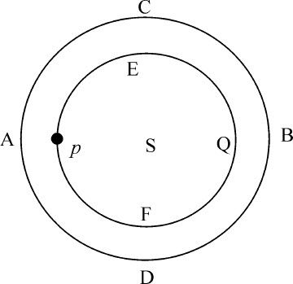
设该球分割为无数共心球面，各球面对小球的吸引（由命题71）反比于小球到球心的距离的平方。通过求和，这些吸引力的和，即整个球对小球的吸引力，也等于相同比值。
证毕。
推论Ⅰ．均匀球在相同距离处的吸引力的比等于球自身的比。因为（由命题72）如果距离正比于球的直径，则力的比等于直径的比。令较大的距离以该比值减小，使距离相等，则吸引力以该比值的平方增大；所以它与其他吸引力的比等于该比值的立方，即等于球的比值。
推论Ⅱ．在任意距离处吸引力正比于球，反比于距离的平方。
推论Ⅲ．如果位于均匀球外的小球受到的吸引力反比于它到球心距离的平方，而球由吸引粒子组成，则每个粒子的力将随小球到每个粒子的距离的平方而减小。
命题75 定理35
如果加在已知球上的各点的向心力随到这些点的距离的平方而减小，则另一个相似的球也受到它的吸引，该力反比于二球心距离的平方。
因为，每个粒子的吸引反比于它到吸引球的中心的距离的平方（由命题74），因而该吸引力如同出自一个位于该球心的小球。另一方面，该吸引力的大小等于该小球自身所受到的吸引，如同它受到被吸引球上各粒子以等于它吸引它们的力吸引它一样。而小球的吸引（由命题74）反比于它到被吸引球的中心的距离的平方；所以，与之相等的球的吸引的比值相同。
证毕。
推论Ⅰ．球对其他均匀球的吸引正比于吸引的球除以它们的中心到被他们吸引的球心距离的平方。
推论Ⅱ．被吸引的球也能吸引时情形相同。因为一个球上若干点吸引另一个球上若干点的力，与它们被后者吸引的力相同；由于在所有吸引作用中（由第三定律），被吸引的与吸引的点二者同等作用，吸引力由于它们的相互作用而加倍，而其比例保持不变。
推论Ⅲ．在涉及物体关于圆锥曲线的焦点运动时，如果吸引的球位于焦点，物体在球外运动，则上述诸结论均成立。
推论Ⅳ．如果环绕运动发生在球内，则仅有物体绕圆锥曲线的中心运动才满足上述结论。
命题76 定理36
如果若干球体（就其物质密度和吸引力而言）相互间由其中心到表面的同类比值完全不相似，但各球在其到中心给定距离处是相似的，而且各点的吸引力随其到被吸引物体的距离的平方而减小：则这些球体中的一个吸引其他球体的全部的力反比于球心距离的平方。
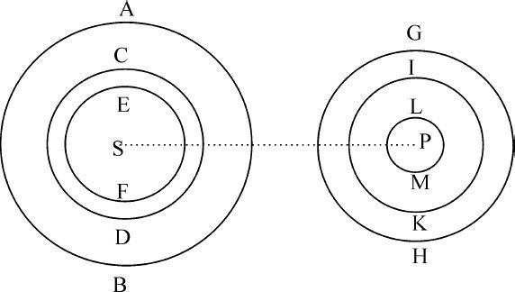
设若干同心相似球AB，CD，EF，等等。其中最里面的一个加上最外面的一个所包含的物质其密度大于球心，或者减去球心处密度后余下同样稀薄的物质。则由命题75，这些球体将吸引其他相似的同心球GH，IK，LM等，其中每一个对其他一个的吸引力反比于距离SP的平方。运用相加或相减方法，所有这些力的总和，或者其中之一与其他的差，即整个球体AB（包括所有其他同心球或它们的差）的合力吸引整个球体GH（包括所有其他同心球或它们的差）也等于相同比值。令同心球数目无限增加，使物质密度同时使吸引力在沿由球面到球心的方向上按任意给定规律增减；并通过增加无吸引作用的物质补足不足的密度，使球体获得所期望的任意形状；而由前述理由，其中之一吸引其他球体的力同样反比于距离的平方。
证毕。
推论Ⅰ．如果有许多此类的球，在一切方面相似，相互吸引，则每个球体对其他一个球体的加速吸引作用，在任意相等的中心距离处，都正比于吸引球体。
推论Ⅱ．在任意不相等的距离处，正比于吸引球体除以二球心距离的平方。
推论Ⅲ．一个球相对于另一个球的运动吸引，或二者间的相对重量，在相同的球心距离处，共同正比于吸引的与被吸引的球，即正比于这两个球的乘积。
推论Ⅳ．在不同的距离处，正比于该乘积，反比于二球心距离的平方。
推论Ⅴ．如果吸引作用由两个球相互作用产生，上述比例式依然成立。因为两个力的相互作用仅使吸引作用加倍，比例式保持不变。
推论Ⅵ．如果这样的球绕其他静止的球转动，每个球绕另一个球转动，而且静止球与运动球心的距离正比于静止球的直径，则环绕周期相同。
推论Ⅶ．如果周期相同，则距离正比于直径。
推论Ⅷ．在绕圆锥曲线焦点的运动中，如果具有上述条件和形状的吸引球位于焦点上，上述结论成立。
推论Ⅸ．如果具有上述条件的运动球也能吸引，结论依然成立。
命题77 定理37
如果球心各点的向心力正比于这些点到被吸引物体的距离，则两个相互吸引的球的复合力正比于二球心间的距离。
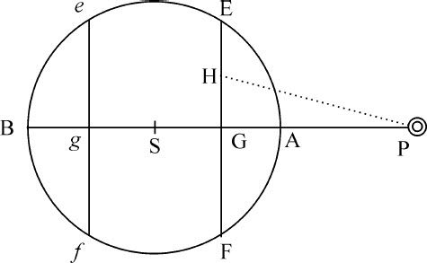
情形1．令AEBF为一个球体，S是其中心；P是被它吸引的小球；PASB为球体通过小球中心的轴；EF，ef 是分割球体的两个平面，与该轴垂直，而且在球的两边到球心的距离相等；G和g 是二平面与轴的交点；H是平面EF上任意一点。点H沿直线PH方向作用于小球P的向心力正比于距离PH；而（由运动定律推论Ⅱ）沿直线PG方向或指向球心S的力，也正比于长度PG。所以，平面EF上所有点（即整个平面）向中心S吸引小球P的力正比于距离PG乘以这些点的数目，即正比于由平面EF和距离PG构成的立方体。由相似方法，使小球P被吸引向球心S的平面ef 的力，正比于该平面乘以其距离Pg ，或正比于相等平面EF乘以距离Pg ；这两个平面的力的和正比于平面EF乘以距离的和PG＋Pg ，即正比于该平面乘以中心到小球距离PS的二倍；即正比于平面EF的二倍乘以球心到小球距离PS，或正比于相等平面EF＋ef 乘以相同距离。而由类似理由，整个球体上球心两边到球心距离相同的所有平面的力，都正比于这些平面的和乘以距离PS，即正比于整个球体与距离PS的乘积。
证毕。
情形2．设小球P也吸引球体AEBF。由相同理由，则使球体被吸引的力也正比于距离PS。
证毕。
情形3．设另一球体包含无数小球P。因为使每个小球被吸引的力正比于小球到第一个球心的距离，同样也正比于第一个球，因而这个力好像是从一个位于球心的小球所发出的一样。则使第二个球体中所有小球被吸引的力，即整个第二个球被吸引的力，也如同是受到位于第一个球心的小球所发生的吸引力一样；所以正比于两个球心之间的距离。
证毕。
情形4．令两球相互吸引，则吸引力加倍，但比例不变。
证毕。
情形5．令小球P置于球体AEBF内，因为平面ef 作用于小球的力正比于该平面与距离pq 所围成的立方体；而平面EF的相反的力正比于它与距离PG所围成的立方体；二者的复合力正比于两个立方体的差，即正比于两个相等平面的和乘以距离的差的一半；即，正比于该和乘以p S，小球到球心的距离。而且，由类似理由，通过整个球体的所有平面EF，ef 的吸引力，即，整个球体的吸引力，正比于所有平面的和，或正比于整个球体，也正比于p S，小球到球体中心的距离。
证毕。
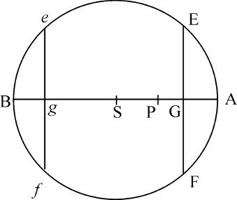
情形6．如果由无数小球p 组成的新球体置于第一个球体AEBF之内，可以证明，与前述相同，不论是一个球体吸引另一个，或是二者相互吸引，吸引力都正比于二球心的距离p S。
证毕。
命题78 定理38
设有二球体，由球心到球面方向上既不相似也不相等，但到中心相等距离处均相似；而且每个点的吸引力正比于到被吸引物体的距离，则使两个这样的球体相互吸引的全部的力正比于二球心之间的距离。
这可以由前一个命题得证，与命题76可由命题75得证一样。
推论．以前在命题10和64中所证明的物体绕圆锥曲线运动的结论，当吸引作用来自具有上述条件的球体的力，以及被吸引物体也是同类球体时，均都成立。
附注
至此我已解释了吸引的两种基本情形；即当向心力随距离的比的平方而减小，或随距离的简单比值而增大，使物体在这两种情形下都沿圆锥曲线转动，并组合成球体，其向心力按同样定律随其到球心的距离而增减，一如球体内各部分那样；这一点极为重要。至于其他情形，其结论有欠优雅和重要，如果把它们像上述情形一样详加论述则有失繁冗。以下我宁可用一种普适的方法对它们作总体的解释和求解。
引理29
如果围绕中心S画一任意圆周AEB，又绕中心P也画两个圆周EF和ef ，并与第一个圆相交于E和e ，与直线PS相交于F和f ；再在PS上作垂线ED，de ：则如果弧长EF，ef 的距离无限减小，趋于零的线段Dd 与趋于零的线段Ff 的最后比值等于线段PE比线段PS。
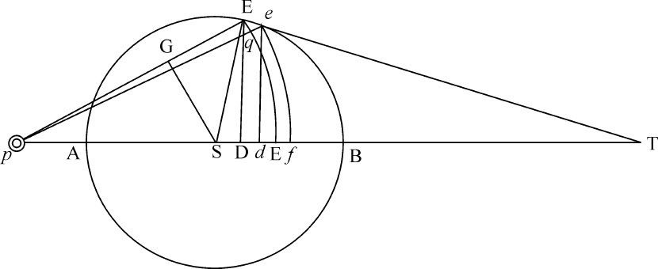
如果直线Pe 与弧EF相交于q ；而直线Ee 与趋于零的弧Ee 重合，并延长与直线PS相交于T；再由S向PE作垂线SG，则，因为三角形DTE，d Te ，DES相似，
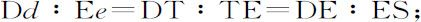
又因为三角形Eeq ，ESG（由引理8，和引理7推论Ⅲ）相似，
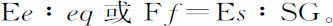
将两比例式对应项相乘，
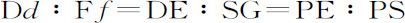
（因为三角形PDE，PGS相似）。
证毕。
命题79 定理39
设一表面EFfe 的宽度无限缩小，并刚好消失；而同一个表面绕轴PS转动产生一个球状凹凸形体，其各部分受到相等的向心力：则形体吸引位于P的小球的力，等于立方体DE2 ·Ff 的比值与使位于Ff 处给定部分吸引同一个小球的力的比值的复合比值。
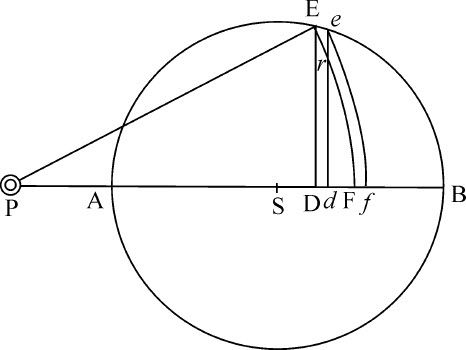
首先考虑弧FE旋转而成的球面EF的力，该弧在某处，比如r 被直线de 分割，这样，弧r E旋转而成的面的圆环部分将比例于短线Dd ，而球体的半径PE保持不变；正如阿基米德在他的著作《论球体和柱体》中所证明的那样。直线PE或Pr 分布于整个圆锥体表面，圆环面的力沿着直线PE或Pr 的方向，比例于该圆环本身；即，正比于短线Dd ，或者，等价地，正比于球体的已知半径PE与短线段Dd 的乘积；但该力沿直线PS方向指向球心S，小于PD与PE的比值，所以正比于PD·Dd 。现在，设线段DF被分割成无数个相等的粒子，每个粒子都以Dd 表示，则表面FE也被分割成同样多个圆环；它们的力正比于所有乘积PD·Dd 的总和，即正比于
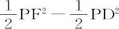
，所以正比于DE2 。再将表面FE乘以高度Ff ；则立体EFfe 作用于小球P的力正比于DE2 ·Ff ；即，如果这个力已知，其上任一给定粒子Ff 在距离PF处作用于小球P的力。而如果这个力为未知，则立体EFfe 的力将正比于立体DE2 ·Ff 乘以该未知力。证毕。
命题80 定理40
如果以S为中心的球体ABE上若干相等部分都受到相等的向心力作用；而且在球AB的直径上置一小球，并在直径上取若干点D，在其上作垂线DE与球体相交于E，如果在这些垂线上取长度DN正比于量
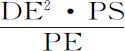
，同时也正比于球体内位于轴上的一粒子在距离PE处作用于小球的力：则使小球被吸引向球体的全部力正比于球体AB的轴与点N的轨迹曲线ANB所围成的面积ANB。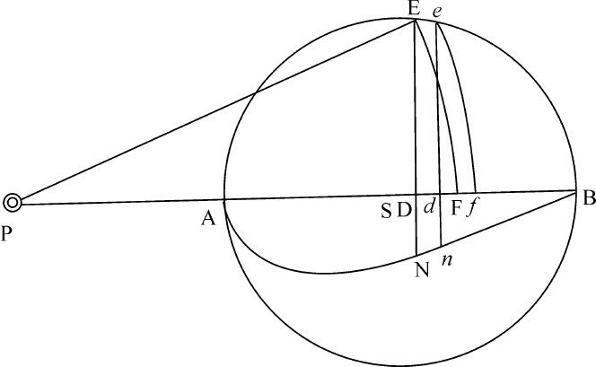
设前一引理和定理的作图成立，把球体AB的轴分割为无数相等粒子Dd ，则整个球体分为同样多的凹凸圆片EFfe ；作垂线dn 。由前一定理，圆片EFfe 吸引小球P的力正比于DE2 ·Ff 与一个粒子在距离PE或PF处作用于小球的力的乘积。但（由上述引理）Dd 比Ff 等于PE比PS，所以Ff 等于
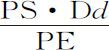
；而DE2 ·Ff 等于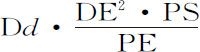
；所以圆片EFfe 的力正比于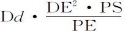
与一个粒子在距离PF处的作用力的乘积即，由命题知，正比于DN·Dd ，或正比于趋于零的面积DNnd 。所以，所有圆片作用于小球的总力正比于所有面积DNnd ，即整个球的力正比于整个面积ANB。证毕。
推论Ⅰ．如果指向若干粒子的向心力在所有距离上都相等，而且DN正比于
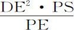
，则球体吸引小球的全部力正比于面积ANB。推论Ⅱ．如果各粒子的向心力反比于它到被吸引的小球的距离的立方，而且DN正比于
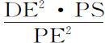
，则整个球体对小球P的吸引力正比于面积ANB。推论Ⅲ．如果各粒子的向心力反比于被它吸引的小球的距离的立方，而且DN正比于
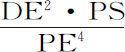
，则整个球体对小球的吸引力正比于面积ANB。推论Ⅳ．一般地，如果指向球体若干粒子的向心力反比于量V；而且DN正比于
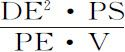
；则整个球体吸引小球的力正比于面积ANB。命题81 问题41
在上述条件下，求面积ANB。
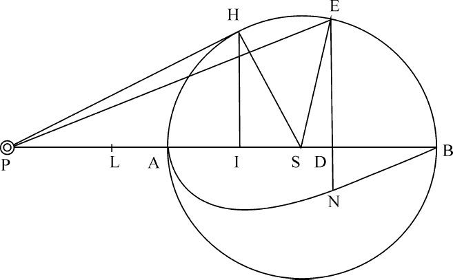
由点P作直线PH与球体相切于H；在轴PAB上作垂线HI，在L＝等分PI；则（由欧几里得《几何原本》第二卷命题12）PE2 等于PS2 ＋SE2 ＋2PS·SD。但因为三角形SPH，SHI相似，SE2 或SH2 等于乘积PS·IS。所以，PE2 等于PS与PS＋SI＋2SD的乘积，即PS与2LS＋2SD的乘积，也即PS与2LD的乘积。而且，DE2 等于SE2 －SD2 ，或等于
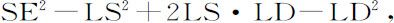
即
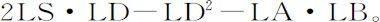
由于LS2 －SE2 或LS2 －SA2 （由欧几里得《几何原本》第二卷命题6）等于乘积LA·LB。
所以，把DE2 以
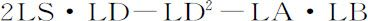
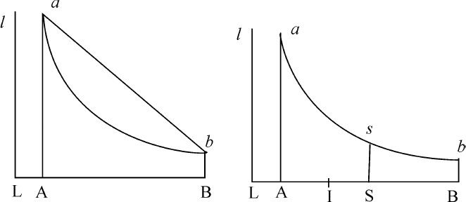
代替，则正比于长度DN（由前一命题推论Ⅳ）的量
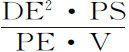
可以分解为三部分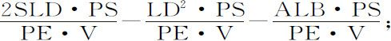
如果以向心力的反比值代替V，以PS与2LD的比例中项代替PE，则这三部分即变成同样多的曲线的纵坐标，曲线的面积可由普通方法求出。
完毕。
例1．如果指向球体各粒子的向心力反比于距离，以距离PE代替V，2PS·LD代替PE2 ；则DN正比于
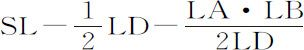
。设DN等于其二倍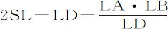
；则纵坐标的已知部分2 SL与长度AB构成长方形面积2SL·AB；其不确定部分LD以连续运动垂直通过同一长度，并在其运动中通过增减其一边或另一边的长度使之总是等于长度LD，做出面积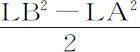
，即面积SL·AB；它被从前一个面积2SL·AB中减去后，余下面积SL·AB。但用相同方法垂直地连续通过同一长度的第三部分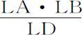
，将画出一个双曲线的面积，将其从面积SL·AB中减去后就余下要求的面积ANB。由此得到本问题的作图法。在点L，A，B作垂线Ll ，Aa ，Bb ；使Aa 等于LB，Bb 等于LA。以Ll 和LB为渐近线，通过点a ，b 作双曲线ab 。作弦线ba ，则所围的面积aba 就是要求的面积ANB。例2．如果指向球体各粒子的向心力反比于距离的立方，或（是同一回事）正比于该立方除以一个任意给定平面；以
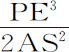
代替V，以2PS·LD代替PE2 ；则DN正比于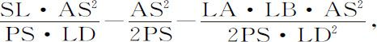
即（因为PS，AS，SI连续成正比），正比于
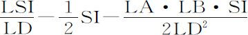
将这三部分通过长度AB，第一部分
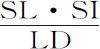
产生双曲线的面积；第二部分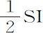
产生面积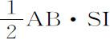
；第三部分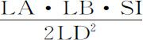
产生面积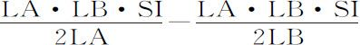
，即，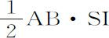
。从第一个面积中减去第二个和第三个面积的和，则余下的即是要求的面积ANB。由此得本问题的作图法。在点L，A，S，B，作垂线Ll ，Aa ，Ss ，Bb ，其中设Ss 等于SI；通过点s ，以Ll ，LB为渐近线作双曲线asb 与垂线Aa ，Bb 相交于a 和b ；从双曲线面积Aasb B中减去面积2SA·SI，即得到要求的面积ANB。例3．如果指向球体各粒子的向心力随其到各粒子的距离的四次方而减小；以 代替V，以 代替PE，则DN正比于
将这三部分通过长度AB，产生以下三个面积 产生 产生 产生 。经过化简后得到 ，和 。从第一项中减去后两项，得到 。所以小球所受到的指向球体中心的总力正比于 ，即反比于PS3 ·PI。
完毕。
运用相同方法可以求出位于球体内小球受到的吸引力，但采用下述定理将更为简便。
命题82 定理42
一个以S为心以SA为半径的球体，如果取SI，SA，SP为连续正比项，则位于球体内任意位置I的小球所受到的吸引力，与位于球体外P处的所受到力的比，等于两者到球心的距离IS，PS的比值的平方根，与在这两处P和I指向球心的向心力的比值的平方根的复合比。
如果球体各粒子的向心力反比于被它们吸引的小球的距离，则整个球体吸引位于I处小球的力，比它吸引位于P处小球的力，等于距离SI与距离SP的比值的平方根，以及位于球心的任意粒子在I处产生的向心力与同一粒子在P处产生的向心力的比值二者的复合比。即，反比于距离SI，SP相互间比值的平方根。这两个比值的平方根复合成相等比值，所以，整个球体在I与在P处产生的吸引相等。由类似计算，如果球上各粒子的力反比于距离的平方，则可以发现I处的吸引力比P处的吸引力等于距离SP比球体半径SA。如果这些力反比于距离比值的立方，在I和P处吸引力的比将等于SP2 比SA2 ；如果反比于比值的四次方，则等于SP3 比SA3 。所以，由于在最后一种情形中P处的吸引力反比于PS2 ·PI，在I处的吸引力将反比于SA3 ·PI，即因为SA3 给定，反比于PI。用相同方法可以此类推至于无限。该定理的证明如下：
保留上述作图，一个小球在任意处所P，其纵坐标DN正比于 。所以，如果画出IE，则任意其他处所的小球，如I处，其纵坐标（其他条件不变）正比于 。设由球体任意点E发出的向心力在距离IE和PE处的比为PE n 比IE n （在此，数值n 表示PE与IE的幂次），则这些纵坐标变为 和 ，相互间比值为PS·IE·IE n 比IS·PE·PE n 。因为SI，SE，SP是连续正比的，三角形SPE，SEI相似；因而IE比PE等于IS比SE或SA。以IS与SA的比值代替IE与PE的比值，则纵坐标比值变为PS·IE n 与SA·PE n 的比值。但PS与SA的比值是距离PS与SI的比值的平方根，而IE n 与PE n 的比值，（因为IE比PE等于IS比SA）是在距离PS，IS处吸引力的比值的平方根。所以，纵坐标，进而纵坐标画出的面积，以及与它成正比的吸引力之间的比值，是这些比值的平方根的复合比。
证毕。
命题83 问题42
求使位于球体中心处一小球被吸引向任意一球冠的力。
令P为球体中心处物体，RBSD为平面RDS与球表面RBS之间的球冠。令DB为由球心P画出的球面EFG分割于F，并将球冠分割为BREFGS与FEDG两部分。设该球冠不是纯数学的而是物理的表面，具有某种厚度，但又是完全无法测度的。令该厚度为O，则（由阿基米德所证明的）该表面正比于PF·DF·O。再设球上各粒子吸引力反比于距离的某次幂，其指数为n ；则表面EFG吸引物体P的力将（由命题79）正比于 ，即，正比于 。令垂线FN乘以O正比于这个量；则纵坐标FN连续运动通过长度DB所画出的曲线面积BDI，将正比于整个球冠吸引物体P的力。
命题84 问题43
求不在球心处而在任意一球冠轴上的小球受该球冠吸引的力。
令物体P位于球冠EBK的轴ADB上，受到球冠的吸引。关于中心P以PE为半径画球面EFK，它把球冠分为二部分EBKFE和EFKDE。用命题81求出第一部分的力，再由命题83求出后一部分的力，二力的和就是整个球冠EBKDE的力。
完毕。
附注
叙述完球体的吸引力后，应该接着讨论由吸引的粒子以类似方法组成的其他物体的吸引定律；但我的计划不拟专门讨论它们。只需补述若干与这些物体的力以及由此产生的运动有关的普适命题即足以敷用，因为这些知识在哲学研究中用处不大。